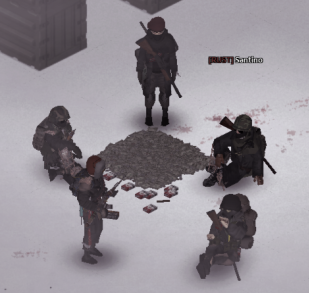
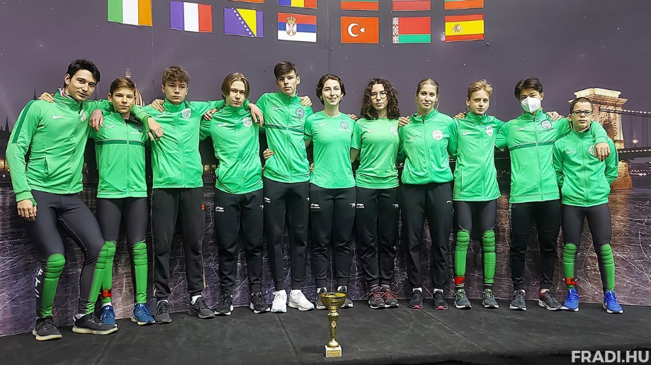
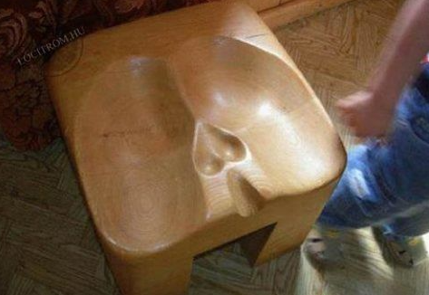

Végi Dániel Márk
Mi a célom
Egy nag családot alapítani és leélni az életemetaszivem választottjával.
Mit tanultam
Eddig egy sportgimnáziumban tanulttam viszont most a SZÁMALK-Szaléziben tanulok szoftverfejlesztő ként és esti oktatásban a BKSZC Kozma Lajos Faipari iskolában tanulom az asztalos szakmát.
Kedvenc tevékenységem
Szabadidőmben szeretek játszani, barátokkal és egyedul is egyaránt. Legfőbb játékokamikkeljátszom:
- Rainbow 6 siege
- Project Zomboid
- Warthunder
- Rising Storm 2
- Star Wars: The Old Republic
Amire büszke vagyok
- 12 év gyorskorcsolya
- 4 év karate
- 1 év ketrecharc
- 1-2 év hoki


